Walking & photography
When I’m not writing about cars, you’ll usually find me somewhere in the Shropshire Hills – walking, running or taking photographs.
I lead walks for outdoor groups, develop routes for local guidebooks and write about the places and people I meet along the way. I’ve also helped outdoor groups reach new audiences through better communication, and shared what I’ve learned through training sessions.
I’m interested in what gets people outside in the first place – whether that’s discovering somewhere new, clearing your head or simply getting away from work, screens and social media for a few hours. I want to help more people find their own reasons to get outside.
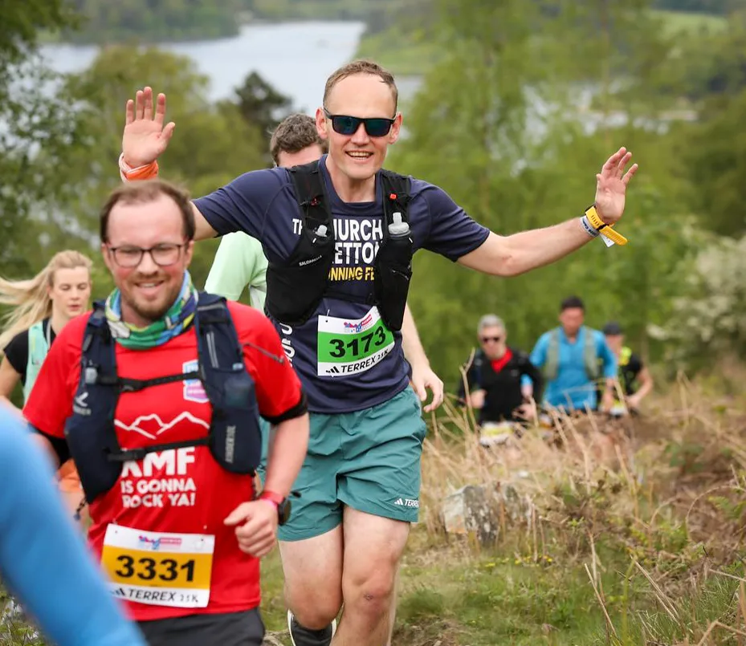
Getting people outside
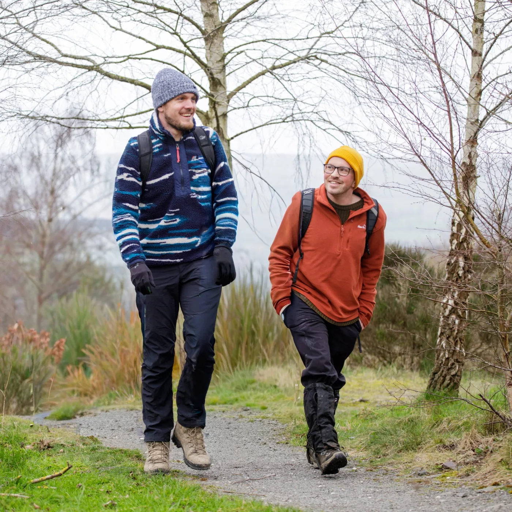
Shropshire Young Ramblers
I lead group walks and help make outdoor activities feel more approachable for people who might otherwise be put off getting started. I also launched a newsletter for the group, which was a genuine hit – regularly pulling open rates of around 75%.
The Ramblers
The newsletter’s success caught the attention of The Ramblers nationally, who asked me to share what worked. I delivered peer-to-peer training to group leaders from across the country on improving promotion and engagement – turning a Shropshire side-project into something other regions are now using too.
Telford Coronation Walks
Telford Coronation Walks is a series of new walking routes created to mark the King’s Coronation, each documented in a published guidebook. I planned and helped signpost two of the routes, then contributed to the guidebook itself – taking a route from an idea on a map to something people can actually follow on the ground.
From the camera bag
The camera usually comes with me on a walk or a run. These are some favourites.
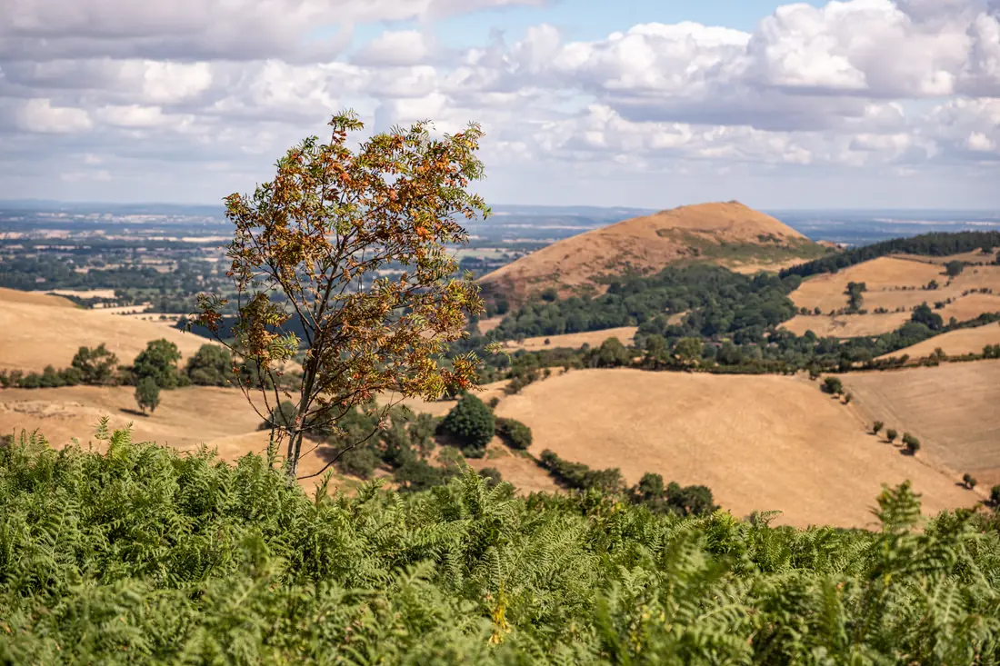
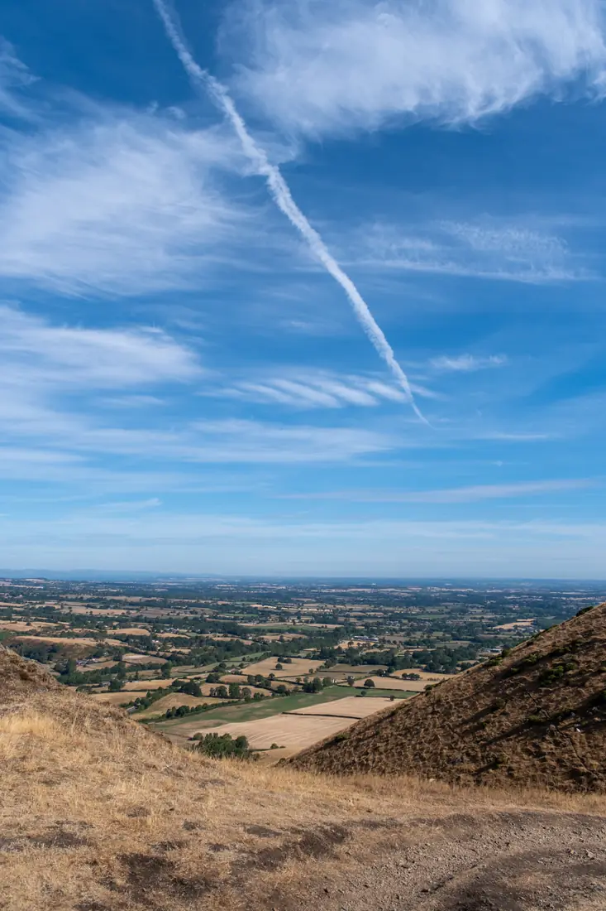
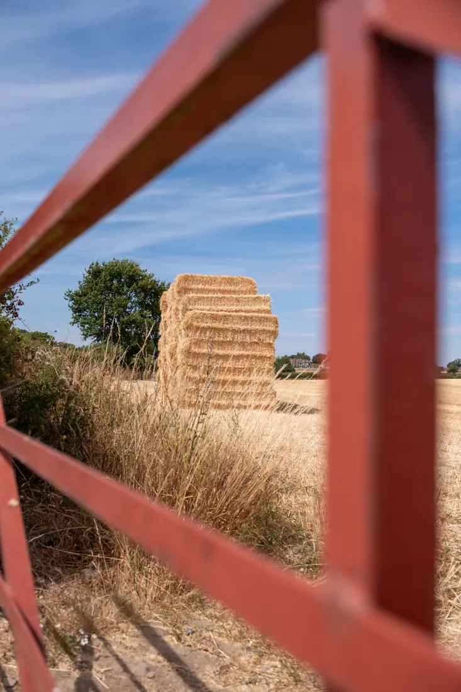
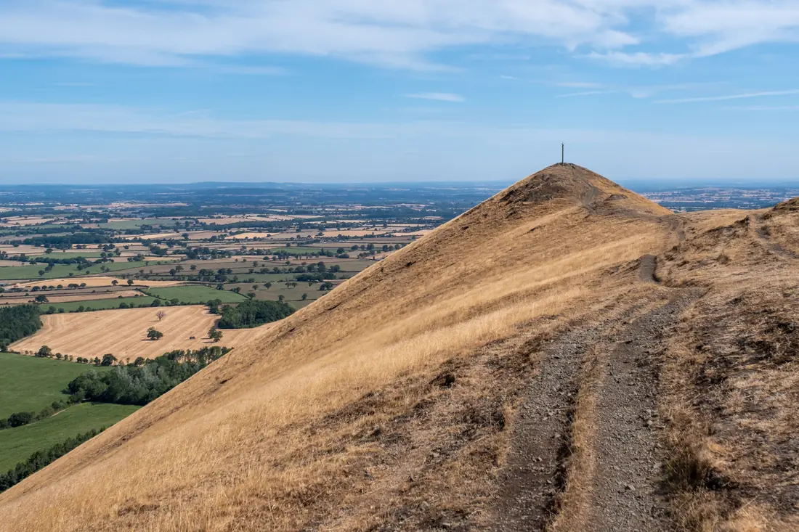
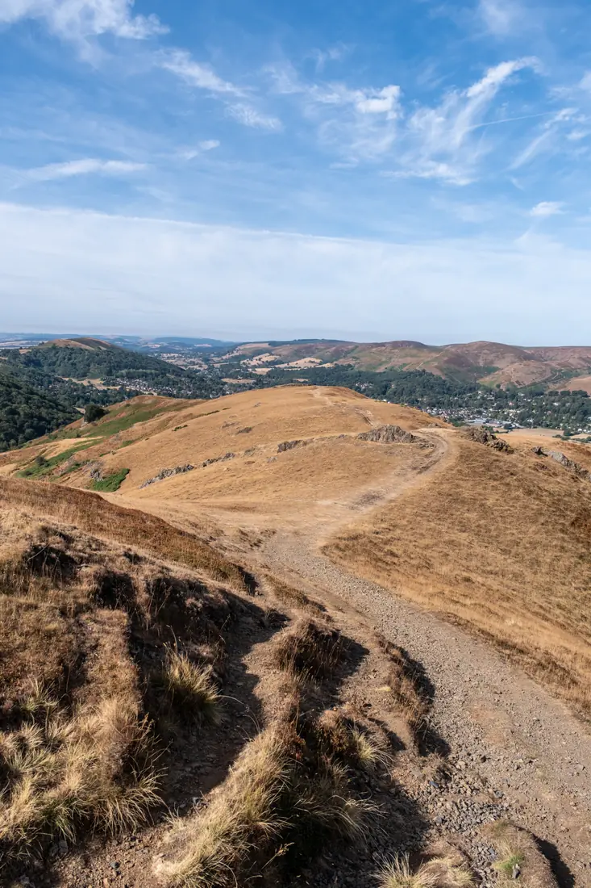
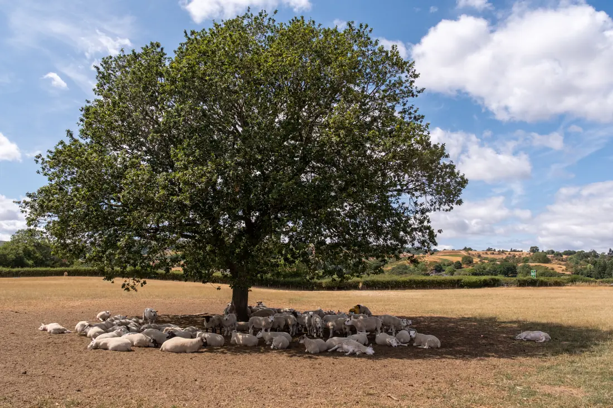
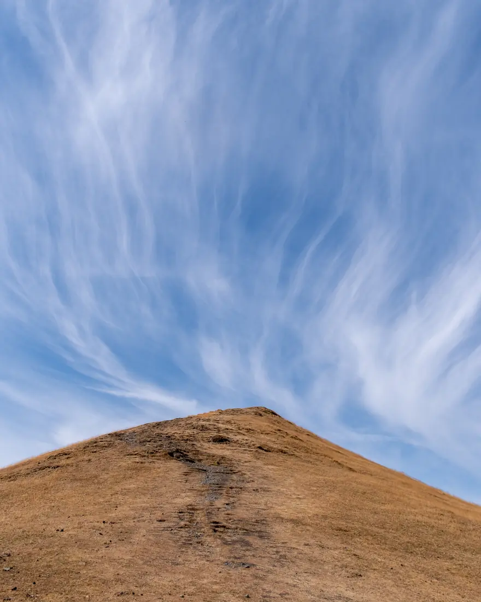
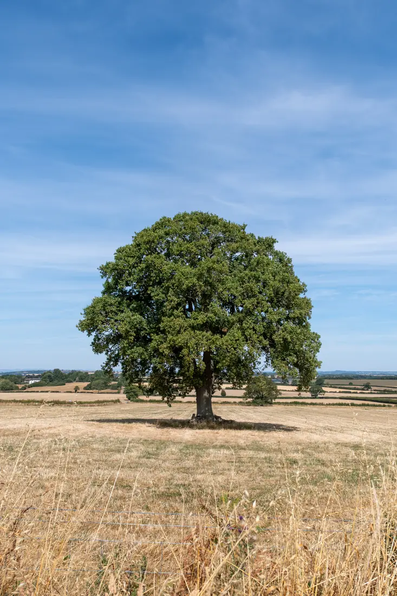
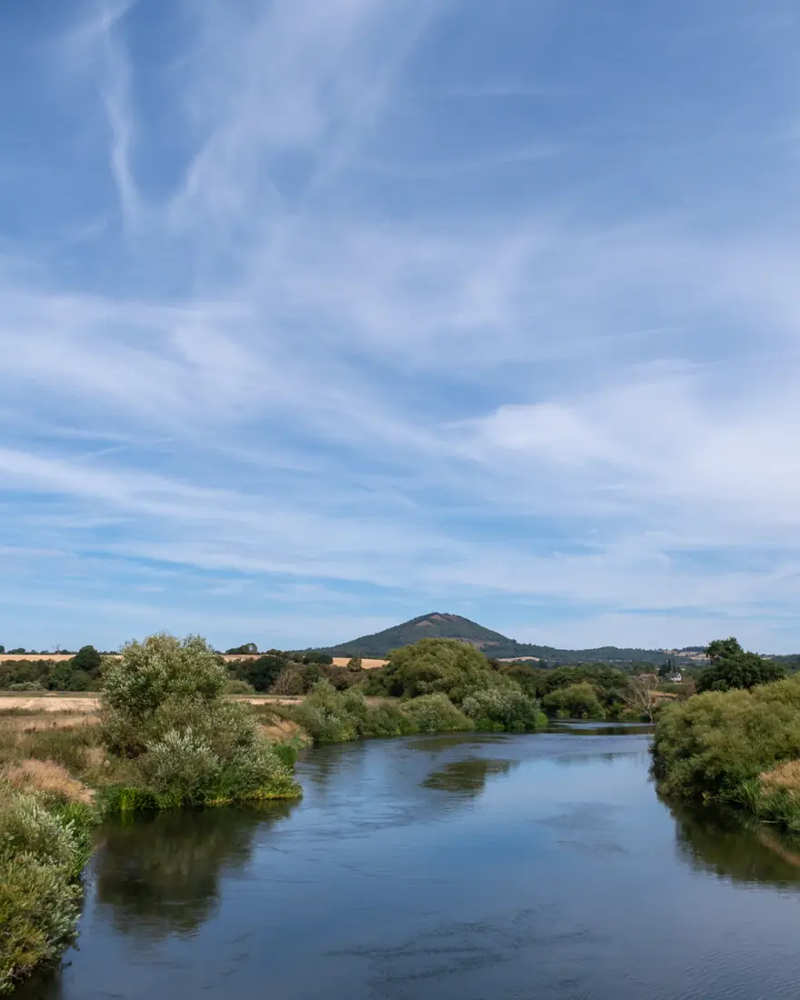
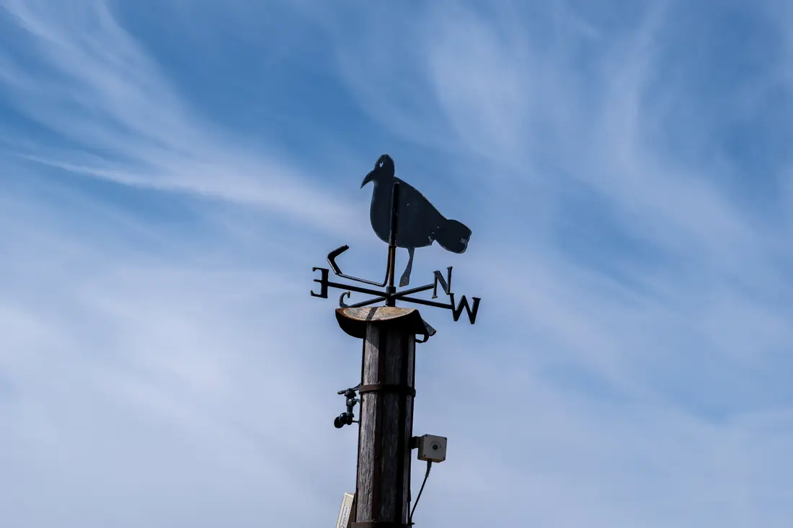
Selected outdoors images are available to license on Alamy ↗
Commissions welcome
I’m here to take on commissions and collaborate with guidebook publishers, outdoor brands and community groups. If you’ve got an idea in mind that you think I could help with, I’d be delighted to chat about it.
Get in touch about a projectFeatures, walk write-ups and guidebook copy – filed to deadline.
Planning, signposting and writing up new walking routes.
Running group walks and building engaged outdoor communities.
Copy and photography delivered together as one editorial package.
Got a walk, a story or a project in mind? I’d love to hear about it.